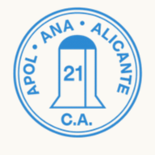

Instala la app
El portal del club se puede añadir a la pantalla de inicio del móvil y se abre a pantalla completa, igual que cualquier otra app. No ocupa casi nada y se actualiza sola. Sigue los pasos según tu teléfono.
iPhone y iPad
Con SafariAbre esta web con Safari (en el iPhone tiene que ser Safari, no vale Chrome).
Toca el botón Compartir (el cuadrado con la flecha hacia arriba), abajo en el centro.
Baja un poco y elige «Añadir a pantalla de inicio».
Toca «Añadir» arriba a la derecha. Ya tienes el icono de Apolana en el móvil.
Android
Con ChromeAbre esta web con Chrome.
Toca el menú ⋮ (los tres puntos), arriba a la derecha.
Elige «Instalar aplicación» (a veces se llama «Añadir a pantalla de inicio»).
Confirma con «Instalar». Listo, ya la tienes.
¿Cómo se actualiza? Sola. Cada vez que la abres con internet trae la última versión. Si quieres forzarlo, dentro de la app desliza el dedo hacia abajo para recargar.
¿Y para volver al portal si entro en la web? Dentro de la app, cuando navegas por la web normal, aparece arriba un botón «← Volver a mi perfil» que te devuelve a tu zona.